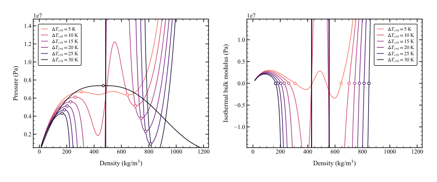

barotropy.fluid_properties.low_level_interface module#
- barotropy.fluid_properties.low_level_interface.calculate_generalized_quality(abstract_state, alpha=10)[source]#
Calculate the generalized quality of a fluid, extending the quality calculation beyond the two-phase region if necessary.
Below the critical temperature, the quality is calculated from the specific volume of the saturated liquid and vapor states. Above the critical temperature, an artificial two-phase region is defined around the critical density line to allow for a finite-width quality computation.
The quality, \(Q\), is given by:
\[Q = \frac{v - v(T, Q=0)}{v(T, Q=1) - v(T, Q=0)}\]where \(v=1/\rho\) is the specific volume and \(T\) is the temperature.
Additionally, this function applies smoothing limiters to ensure the quality is bounded between -1 and 2. These limiters prevent the quality value from taking arbitrarily large values, enhancing stability and robustness of downstream calculation. The limiters use the logsumexp method for smooth transitions, with a specified alpha value controlling the smoothness.
- Parameters:
- abstract_stateCoolProp.AbstractState
CoolProp abstract state of the fluid.
- alphafloat
Smoothing factor of the quality-calculation limiters.
- Returns:
- float
The calculated quality of the fluid.
- barotropy.fluid_properties.low_level_interface.calculate_subcooling(abstract_state)[source]#
Calculate the degree of subcooling for a given CoolProp abstract state.
This function computes the subcooling of a fluid using the CoolProp library’s abstract state class. It handles both subcritical and supercritical conditions to provide a measure of subcooling for any thermodynamic state. This results in a continuous variation of subcooling in the two-phase region, which is necessary to achieve reliable convergence of systems of equations and optimization problems involving the degree of subcooling.
- Calculation cases:
Physically meaningful subcooling for subcritical states in the liquid region:
\[\Delta T = T(p, Q=0) - T \quad \text{for} \quad h < h(p, Q=0)\]Artificial subcooling for subcritical states in the vapor and two-phase regions:
\[\Delta T = \frac{h(p, Q=0) - h}{c_p(p, Q=0)}\]Artificial subcooling for supercritical states defined using the critical density line:
\[\Delta T = T(p, \rho_{\text{crit}}) - T\]
- Parameters:
- abstract_stateCoolProp.AbstractState
The abstract state of the fluid for which the subcooling is to be calculated.
- Returns:
- float
The degree of subcooling in Kelvin.
Examples
>>> import CoolProp as CP >>> abstract_state = CP.AbstractState("HEOS", "water") >>> abstract_state.update(CP.PT_INPUTS, 101325, 25+273.15) >>> subcooling = bpy.calculate_subcooling(abstract_state) >>> print(f"Subcooling is {subcooling:+0.3f} K") Subcooling is +74.974 K
>>> abstract_state = CP.AbstractState("HEOS", "water") >>> abstract_state.update(CP.PQ_INPUTS, 101325, 0.05) >>> subcooling = bpy.calculate_subcooling(abstract_state) >>> print(f"Subcooling is {subcooling:+0.3f} K") Subcooling is -26.763 K
- barotropy.fluid_properties.low_level_interface.calculate_superheating(abstract_state)[source]#
Calculate the degree of superheating for a given CoolProp abstract state.
This function computes the superheating of a fluid using the CoolProp library’s abstract state class. It handles both subcritical and supercritical conditions to provide a measure of superheating for any thermodynamic state. This results in a continuous variation of superheating in the two-phase region, which is necessary to achieve in reliable convergence of systems of equations and optimization problems involving the degree of superheating.
- Calculation cases:
Physically meaningful superheating for subcritical states in the vapor region:
\[\Delta T = T - T(p, Q=1) \quad \text{for} \quad h > h(p, Q=1)\]Artificial superheating for subcritical states in the liquid and two-phase regions:
\[\Delta T = \frac{h - h(p, Q=1)}{c_p(p, Q=1)}\]Artificial superheating for supercritical states defined using the critical density line:
\[\Delta T = T - T(p, \rho_{\text{crit}})\]
- Parameters:
- abstract_stateCoolProp.AbstractState
The abstract state of the fluid for which the superheating is to be calculated.
- Returns:
- float
The degree of superheating in Kelvin.
Examples
>>> import CoolProp as CP >>> abstract_state = CP.AbstractState("HEOS", "water") >>> abstract_state.update(CP.PT_INPUTS, 101325, 120 + 273.15) >>> superheating = calculate_superheating(abstract_state) >>> print(f"Superheating is {superheating:+0.3f} K") Superheating is +20.026 K
>>> abstract_state = CP.AbstractState("HEOS", "water") >>> abstract_state.update(CP.PQ_INPUTS, 101325, 0.95) >>> superheating = calculate_superheating(abstract_state) >>> print(f"Superheating is {superheating:+0.3f} K") Superheating is -54.244 K
- barotropy.fluid_properties.low_level_interface.compute_properties_1phase(abstract_state, generalize_quality=False, compute_subcooling=False, compute_superheating=False)[source]#
Get single-phase properties from CoolProp low level interface
Direct call to coolprop
TODO To be completed
- barotropy.fluid_properties.low_level_interface.compute_properties_2phase(abstract_state, compute_subcooling=True, compute_superheating=True)[source]#
Get two-phase properties from mixing rules and single-phase CoolProp properties
Homogeneous equilibrium model
State formulas for T=T, p=p, mfrac/vfrac(rho), h-s-g-u-cp-cv, mu-k, a TODO To be completed
- barotropy.fluid_properties.low_level_interface.compute_properties_metastable(abstract_state, prop_1, prop_1_value, prop_2, prop_2_value, rho_guess, T_guess, solver_algorithm='hybr', tolerance=1e-06, print_convergence=False)[source]#
Determine the thermodynamic state for the given fluid property pair by iterating on the density-temperature native inputs of the Helmholtz energy equations of state.
This function uses a non-linear root finder to determine the solution of the nonlinear system given by:
\[\begin{split}R_1(\rho,\, T) = y_1 - y_1(\rho,\, T) = 0 \\ R_2(\rho,\, T) = y_2 - y_2(\rho,\, T) = 0\end{split}\]where \((y_1,\, y_2)\) is the given thermodynamic property pair (e.g., enthalpy and pressure), while density and temperature \((\rho,\, T)\) are the independent variables that the solver iterates until the residual of the problem is driven to zero. The calculations \(y_1(\rho,\, T)\) and \(y_1(\rho,\, T)\) are performed by evaluating the Helmholtz energy equation of state.
- Parameters:
- prop_1str
The the type of the first thermodynamic property.
- prop_1_valuefloat
The the numerical value of the first thermodynamic property.
- prop_2str
The the type of the second thermodynamic property.
- prop_2_valuefloat
The the numerical value of the second thermodynamic property.
- rho_guessfloat
Initial guess for density
- T_guessfloat
Initial guess for temperature
- methodstr, optional
Method to be used for solving the nonlinear system. Available solvers are:
hybr: Uses MINPACK’s ‘hybrd’ method, which is is a modification of Powell’s hybrid method (default).lm: The Levenberg-Marquardt method, which blends the steepest descent and the Gauss-Newton methods.
- tolerancefloat, optional
Tolerance for the solver termination. Defaults to 1e-6.
- print_convergencebool, optional
If True, displays the convergence progress. Defaults to False.
- Returns:
- dict
Thermodynamic properties corresponding to the given input pair.
See also
compute_properties_metastable_rhoT()Evaluation of Helmholtz energy equation of state.
- barotropy.fluid_properties.low_level_interface.compute_properties_metastable_rhoT(rho, T, abstract_state)[source]#
Compute the thermodynamic properties of a fluid using temperature-density calls to the Helmholtz energy equation of state (HEOS).
- Parameters:
- rhofloat
Density of the fluid (kg/m³).
- Tfloat
Temperature of the fluid (K).
- abstract_stateCoolProp.AbstractState
The abstract state of the fluid for which the properties are to be calculated.
- Returns:
- dict
Thermodynamic properties computed at the given density and temperature.
Notes
The Helmholtz energy equation of state (HEOS) expresses the Helmholtz energy as an explicit function of temperature and density:
\[\Phi = \Phi(\rho, T)\]In dimensionless form, the Helmholtz energy is given by:
\[\phi(\delta, \tau) = \frac{\Phi(\delta, \tau)}{R T}\]where:
\(\phi\) is the dimensionless Helmholtz energy
\(R\) is the gas constant of the fluid
\(\delta = \rho / \rho_c\) is the reduced density
\(\tau = T_c / T\) is the inverse of the reduced temperature
Thermodynamic properties can be derived from the Helmholtz energy and its partial derivatives. The following table summarizes the expressions for various properties:
Helmholtz energy thermodynamic relations# Property name
Mathematical relation
Pressure
\[Z = \frac{p}{\rho R T} = \delta \cdot \phi_{\delta}\]Entropy
\[\frac{s}{R} = \tau \cdot \phi_{\tau} - \phi\]Internal energy
\[\frac{u}{R T} = \tau \cdot \phi_{\tau}\]Enthalpy
\[\frac{h}{R T} = \tau \cdot \phi_{\tau} + \delta \cdot \phi_{\delta}\]Isochoric heat capacity
\[\frac{c_v}{R} = -\tau^2 \cdot \phi_{\tau \tau}\]Isobaric heat capacity
\[\frac{c_p}{R} = -\tau^2 \cdot \phi_{\tau \tau} + \frac{(\delta \cdot \phi_{\delta} - \tau \cdot \delta \cdot \phi_{\tau \delta})^2}{2 \cdot \delta \cdot \phi_{\delta} + \delta^2 \cdot \phi_{\delta \delta}}\]Isobaric expansivity
\[\alpha \cdot T = \frac{\delta \cdot \phi_{\delta} - \tau \cdot \delta \cdot \phi_{\tau \delta}}{2 \cdot \delta \cdot \phi_{\delta} + \delta^2 \cdot \phi_{\delta \delta}}\]Isothermal compressibility
\[\rho R T \beta = \left(2 \cdot \delta \cdot \phi_{\delta} + \delta^2 \cdot \phi_{\delta \delta} \right)^{-1}\]Isothermal bulk modulus
\[\frac{K_T}{\rho R T} = 2 \cdot \delta \cdot \phi_{\delta} + \delta^2 \cdot \phi_{\delta \delta}\]Isentropic bulk modulus
\[\frac{K_s}{\rho R T} = 2 \cdot \delta \cdot \phi_{\delta} + \delta^2 \ \cdot \phi_{\delta \delta} - \frac{(\delta \cdot \phi_{\delta} - \tau \cdot \delta \cdot \phi_{\tau \delta})^2}{\tau^2 \cdot \phi_{\tau \tau}}\]Joule-Thompson coefficient
\[\rho R \mu_{\mathrm{JT}} = - \frac{\delta \cdot \phi_{\delta} + \tau \cdot \delta \cdot \phi_{\tau \delta} + \delta^2 \cdot \phi_{\delta \delta}}{(\delta \cdot \phi_{\delta} - \tau \cdot \delta \cdot \phi_{\tau \delta})^2 - \tau^2 \cdot \phi_{\tau \tau} \cdot (2 \cdot \delta \cdot \phi_{\delta} + \delta^2 \cdot \phi_{\delta \delta})}\]Where the following abbreviations are used:
\(\phi_{\delta} = \left(\frac{\partial \phi}{\partial \delta}\right)_{\tau}\)
\(\phi_{\tau} = \left(\frac{\partial \phi}{\partial \tau}\right)_{\delta}\)
\(\phi_{\delta \delta} = \left(\frac{\partial^2 \phi}{\partial \delta^2}\right)_{\tau, \tau}\)
\(\phi_{\tau \tau} = \left(\frac{\partial^2 \phi}{\partial \tau^2}\right)_{\delta, \delta}\)
\(\phi_{\tau \delta} = \left(\frac{\partial^2 \phi}{\partial \tau \delta}\right)_{\delta, \tau}\)
This function can be used to estimate metastable properties using the equation of state beyond the saturation lines.
- barotropy.fluid_properties.low_level_interface.compute_spinodal_point(T, abstract_state, branch='liquid', N_trial=50)[source]#
Compute the vapor or liquid spinodal point of a fluid at a given temperature.
- Parameters:
- Tfloat
Temperature of the fluid (K).
- abstract_stateCoolProp.AbstractState
The abstract state of the fluid for which the spinodal point is to be calculated.
- branchstr, optional
Branch of the spinodal line used to determine the density initial guess. Options: ‘liquid’ or ‘vapor’. Default is ‘liquid’.
- N_trialint, optional
Number of trial points to generate the density initial guess. Default is 50.
- Returns:
- dict
Thermodynamic properties at the spinodal point.
- Raises:
- ValueError
If the input temperature is higher than the critical temperature or lower than the triple temperature.
Notes
When a single-phase fluid undergoes a thermodynamic process and enters the two-phase region it can exist in a single-phase state that is different from the equilibrium two-phase state. Such states are know as metastable states and they are only possible in the thermodynamic region between the saturation lines and the spinodal lines. If the thermodynamic process continues and crosses the spinodal lines metastable states become unstable and the transition to two-distinct phase occurs rapidly. Therefore, the spinodal line represents the locus of points that separates the region where a mixture is thermodynamically unstable and prone to phase separation from the region where metastable states are physically possible.
In mathematical terms, the spinodal line is defined as the loci of thermodynamic states in which the isothermal bulk modulus of the fluid is zero:
\[K_T = \rho \left( \frac{\partial p}{\partial \rho} \right)_T = 0\]More precisely, a vapor spinodal point is the first local maximum of a isotherm line in a pressure-density diagram as the density increases. Conversely, a liquid spinodal point is the first local minimum of a isotherm line in a pressure-density diagram as the density decreases. The spinodal lines and phase envelope of carbon dioxide according to the HEOS developed by [Span and Wagner, 1996] are illustrated in the figure below
Some equations of state are not well-posed and do not satisfy the condition \(K_T=0\) within the two-phase region. This is exemplified by the nitrogen HEOS developed by [Span et al., 2000].

As seen in the figure, this HEOS is not well-posed because there are isotherms that do not have a local minimum/maximum corresponding to a state with zero isothermal bulk modulus. In such cases, this function returns the inflection point of the isotherms (corresponding to the point closest to zero bulk modulus) as the spinodal point.